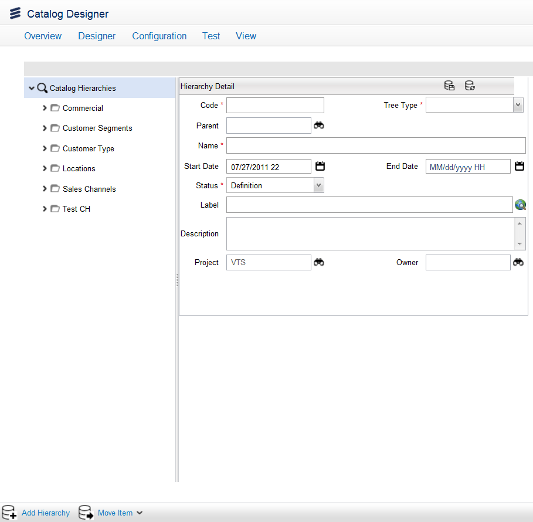
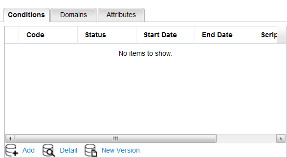

Add Catalog Hierarchies
To add a new catalog hierarchy, follow these steps:
Note: A project must be opened to create a catalog hierarchy.
- In Catalog Designer, open a project.
- Access the Catalog Hierarchies option using the Quick Start menu on the Ericsson Catalog Manager home page or from the menu bar by clicking Designer > Catalog Hierarchies menu. The catalog hierarchies tree node appears.
- Click the Add Hierarchy button in the left pane; the Hierarchy Detail dialog appears in the right pane.

-
Complete the information in the following fields:
| Field |
Description |
| Code |
The name of the Catalog Hierarchy. See also Catalog Queries. |
| Tree Type |
Select a tree type from the drop-down list that has following options:
| Tree Type |
Description |
| Classification type |
Each classification tree is a hierarchy of tree nodes (catalog items) that contain two types of links. The links to children nodes and links to other items. The items are usually, but not mandatory, attached to the leaf nodes of the tree. One item may be attached to different tree nodes in one and many trees.
Classification trees are used to guide the process of selection for a set of items based on successive steps of selection classification options. These trees are used in self-care applications and are useful for specific application which needs to group a set of items on hierarchical selection criteria.
An example of classification tree may be a communication provider which delivers TV service and allows selecting individual sports TV channels. A selection of the TSN channel may be based on the following classification sequence: Home >TV > Channels > Sport > TSN. |
| Availability tree |
The availability trees defines simple but universally used availability rules, such as availability based on geographical region, channel, or business customer, etc. The availability tree is similar to the classification tree but it maintains two types of links to the other items inclusive links and exclusive links. The inclusive links specify that the item is available for the node and exclusive links specify that the item is not available for the node.
The availability tree nodes automatically inherits the items from their parent. if a parent has a link (inclusive or exclusive) to an item, all children will have the same link unless the opposite type of link is explicitly specified. This way the availability trees reduce significantly the amount of data which is needed to specify the relation between items and tree nodes.
For-example,
a branch of the availability tree has the following content:
1. Canada – inclusive items A,B,C,D,E
2 Central Canada – exclusive item B
3. Ontario – inclusive item E
4. Southwest Ontario – exclusive item A
5. GTA – inclusive item E
6. Etobicoke – exclusive item A, inclusive item F
Then for Etobicoke the available products are: C, D, E and F
The API CatalogAvailabilityNode – isAvailable(item) can be used for this along with existing API‘s that it inherits from Catalog Hierarchy Node. Refer to JavaScript documentation for more information on API‘s. |
Notes:
- The tree type of a child catalog hierarchy is inherited from the parent catalog hierarchy and it cannot be changed.
- A sample data file, sampleMarketSegmentsandBusinessDatesModel.zip, is available in the product. This file contains preconfigured data for availability trees, market segment dimensions, and business date models that you can import. This file appears in your <installation_folder>\modules\catalog folder.
|
| Parent |
The name of the top-level hierarchy node. |
| Name |
This field denotes the unique name of the Catalog Hierarchy. |
| Start Date |
The start date that the hierarchy is available. |
| End Date |
The last date that the hierarchy is available. |
| Status |
The status is attributed to the development stage of the project. For more information on project stages, see Projects. |
| Label |
The label for this node, which is used in the application user interface. Label can be translated at runtime (Refer to Velocity Studio's Translation Element for more details). |
| Description |
The description of this node. |
| Project |
The name of the project in which the hierarchy resides. |
| Owner |
This is the position of the user who created the project and only users with the same position or higher can access the project data. This value cannot be changed. Refer to Domains for more information. |
- Click the Save button.
- The Catalog hierarchy displays Conditions, Domains, and Attributes tabs.

Click on a tab to perform the following tasks:
- Conditions tab displays business rules to add to the hierarchy. For a description of fields that appear in the Conditions tab, see Charge Type Conditions.
- Domains tab is the area where you can specify an Org Chart to associate with the info model. See also Catalog Domains.
- Attributes tab is the area where you add or view attribute details for an element or a characteristic of the component based on criteria such as code, attribute, name, status, start date, and end date. See also Search For an Attribute Type.
Export Catalog Hierarchies
You can export the selected Catalog hierarchy to an XML file format based on the following export types:
- The Selected object. Choose this option to export the selected Catalog hierarchy objects with assocations such as with or without domains.
- Only the image or attachment of the selected object. Choose this option if you want to export only the image or attachment that is assocated with the selected object.
For more information, see Export Catalog Objects.
Change History
f you make a change to the catalog definition, you can view the Change History form that displays the revisions made to the Attribute Type's field values. See also Change History.
|
{kind=link}